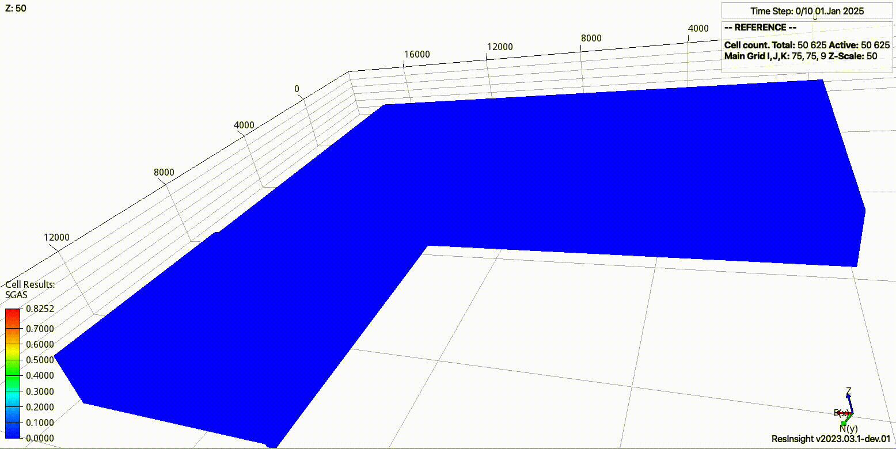

Introduction
{kind=link}
This documentation describes the expreccs tool hosted in https://github.com/cssr-tools/expreccs.
Concept
Simplified and flexible testing framework for two-stage approach (dynamic pressure boundary conditions) to improve CO2 storage regional and site simulations:
Simulate the regional model (all timesteps).
Identify connections on the regional model that corresponds to the boundary of the site model.
Set the pressures from the regional model as boundary conditions on the site model.
Simulate the site model.
The current development of expreccs focuses on generic geological models, i.e., given the simulation decks for the regional model and the site model, which grids do not need to conform, then to use expreccs for handling the boundary projections and modification of the input decks to include the dynamic boundary updates.
Overview
The current implementation supports the following executable with the argument options:
expreccs -i name(s)_of_input_file(s)
where
- -i
The base name of the configuration file; or paths (space between them and quotation marks) to the regional and site models (‘input.toml’ by default).
- -o
The base name of the output folder (‘output’ by default).
- -m
Run the whole framework (‘all’), only the reference (‘reference’), only the site (‘site’), or only regional and site models (‘noreference’) (‘all’ by default).
- -c
Generate metric plots for the current outputed folders (‘compare’) (’’ by default).
- -p
Create nice figures in the postprocessing folder (‘no’ by default).
- -u
Using ‘gasoil’ or ‘gaswater’ co2store implementation (‘gaswater’ by default).
- -r
Using the ‘opm’ or ‘resdata’ python package (‘resdata’ by default).
- -t
Grades to rotate the site geological model (‘0’ by default).
- -b
Set the number of entries to skip the bc projections on the site, where ‘j=0,i=nx,j=ny,i=0’, e.g., ‘0,2,0,0’ would skip all cells with i=nx and i=nx-1; this becomes handly for models where all cells in a given site are inactive along a side (‘0,0,0,0’ by default).
- -f
Frequency to evaluate the boundary pressures on the site between report steps in the site. Write an array, e.g., ‘2,7,3’, to set the frequency in each site report step (‘1’ by default).
- -a
Exponential ‘a’ coefficient for the telescopic time-discretization for the given frequency ‘-f’. Write an array, e.g., ‘2.2,0,3.1’, to set the coefficient in each site report step (‘3.2’ by default, use 0 for an equidistance partition).
- -w
Set to 1 to print warnings (‘0’ by default).
- -l
Set to 0 to not use LaTeX formatting (‘1’ by default).
The valid flags for toml configuration file are -i, -o, -m, -c, -p, -u, -r, -t, -w, and -l. The valid flags for paths to the regional and site folders are -i, -o, -b, -f, -a, and -w.
In the configuration file the geological model is defined by generation of corner-point grids (cpg), adding heterogeinities (e.g., different rock properties, faults, hysteresis), wells, and defining schedules for the operations (see the configuration file section).